来源：https://jw0o0ngtxho.feishu.cn/docx/ZecBdkOqvohGJ7x4AsZcSkG7ntf
大家好，我是迪娜。一名80后SCI期刊编辑。2020年4月加入生财，参加过Tiktok航海，小红书个人IP等项目，虽然涨了一些粉丝，出过爆款，但是因为变现路径不明确，后来都不了了之。中间很长一段时间，很少打开生财。因为只要我不行动，失败就找不到我。
去年ChatGPT面世以后，大家都知道它在生成内容方面非常厉害。我也非常感兴趣，跟着生财和AI风向标星球，学到了不少干货。
后来结合主业工作，做了一套用ChatGPT来辅助SCI学术论文写作润色的课程，售价999元，4个多月买了100多份。
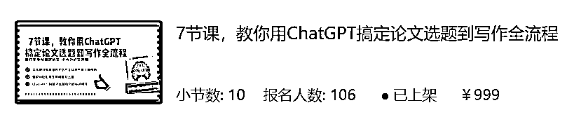
之后根据学员的要求，又做了一门针对中文毕业论文的AI辅助课程，在没有怎么宣传的情况下，999元已经卖了20多份，基本是老学员复购。
以下是学员评价：
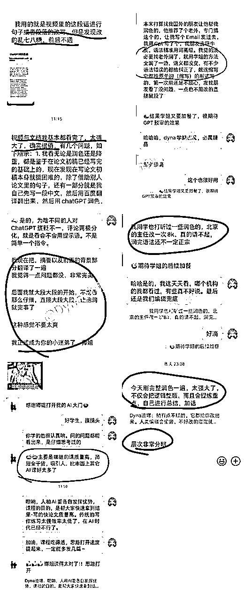
学员论文成功发表，过来感谢：
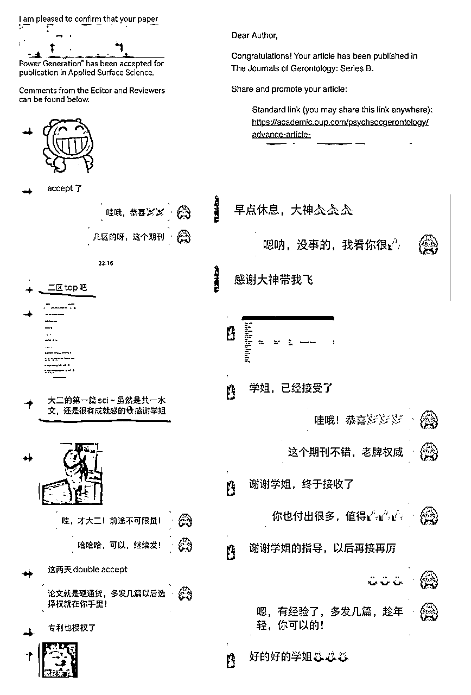
作为一个大龄职场打工人，刚开始卖课的时候，我微信小号只有300多人，公众号+知乎不到1000粉丝。也没有任何互联网销售经验。算是互联网小白+素人，第一个课程刚准备上线的时候，我天天寝食难安，安慰自己“搞砸了大不了把钱退给别人，反正也没几个人买。”
慢慢的，也能走出舒适圈，战胜自己的自卑恐惧，脱下孔乙己的长衫，把课程卖出100多份，赚了工资以外的第一个10w+，还收获了素不相识的一帮网络粉丝。我觉得超有成就感。
下面我将从以下四个方面详细给大家拆解还原：
希望对于在本行业工作了3-5年的职场人士，或者想做AI相关课程的圈友一些启发。
经济形势下滑，大厂裁员，到处都在宣扬35岁危机。内卷时代，泛知识会越来越不值钱，而细分领域的刚需问题的知识体系才值钱。这，正是大龄职场人的优势。咱们千万不要看轻自己，借助ChatGPT做一门细分行业的应用课程，高价售卖，摆脱低价竞争，你也可以。
我所在的sci期刊，算是体制内，只要你不犯错不主动离职，还是比较稳定的。但是，在整个职场内卷加剧的大环境下，从原来的准点下班到加班时长越来越长，职场环境越来越恶劣。
虽然在体制内科研单位，但是期刊编辑部属于边缘部门，职场晋升很困难。作为小镇做题家出身，我也一度把心思都用在走职场窄门上，写文章，考证，拿到上级单位认证的副高资格评审证书。但是，在职场这个有限游戏规则内，就是要排资论辈，慢慢排队。熬年限，熬资历。虽然外人看来工作稳定，收入中等，不愁吃喝。但是，这种被别人挑拣，自己的人生完全做不了主的感觉，心理上很煎熬；而且，工作几年以后，工作内容趋向于重复性，学不到新东西，个人能力也没什么长进，而我又是一个很享受学新东西的人，重复性没有任何成长的工作也让我每天上班非常痛苦。
职场晋升受阻，另一边就是想跳槽或者搞副业另谋出路。开头介绍过，中间也不间断尝试过很多，因为变现目标不明确，都不了了之。
回到说ChatGPT。因为我的工作内容之一，就是给已经接受的稿子做语言润色。学术论文是有固定格式和写作风格的八股文，不需要个人风格，但是要求行文逻辑性强，严谨，用词精准。对于工作中的论文润色这块，干多了，有点像流水线活，但是也很花时间。一篇5000字的研究性论文，至少的花一天时间来逐字阅读润色，写的差的论文需要两天时间才能完成。
我就想能不能用它来帮我完成语言润色呢，刚开始是用的角色赋予模式，效果已经很不错了。后来结构化提示语出来以后，我又琢磨迭代了论文润色的结构化提示语，发现效果非常好，5000字的论文半小时就能搞定，对各种主题和领域的文章，都能改的很专业地道。
因为论文润色这块，本身已经有很成熟的商业化模式，需求早就被验证。ChatGPT面世之前，非英语母语的科研人员在完成SCI/SSCI论文之后，都会先送润色公司进行语言润色，以提升论文的可读性和通过率。很多大的出版商（Nature/Springer/Wiley/Elsevier等）都有这个服务，还有一些专门的润色公司提供润色服务。
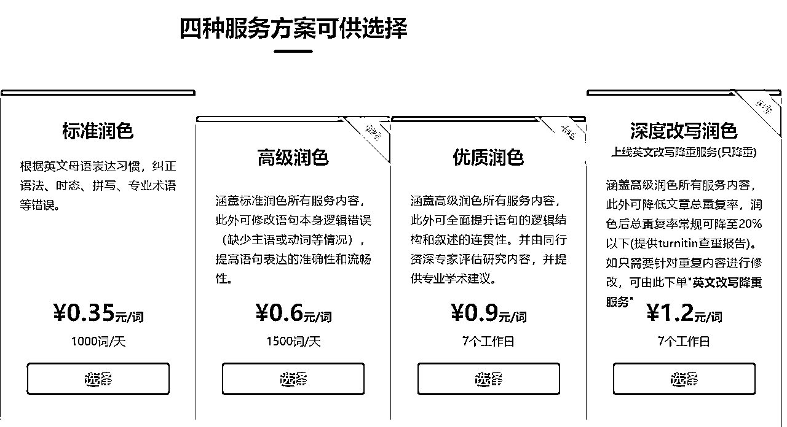
这是商业公司的润色服务报价。一篇论文一遍3-5000字，润色花费通常在2-5000元不等，看润色深度和是否加急处理而定。而经过调试的结构化润色提示语，可以用ChatGPT达到第三档-优质润色水准，而且不到1小时就能完成。
我敏锐的意识到了它的价值。于是兴冲冲写了一篇6000字的分享文章，发到知乎。当然，文末也留了几个资料，吸引感兴趣的人加到微信。当时，知乎只有300多粉丝，然后这篇文章爆了，评论区和后台很多私信要求文档的。
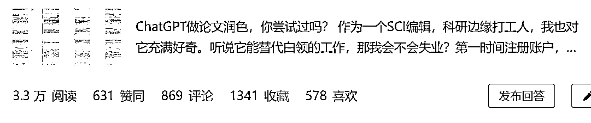
靠着这篇文章，陆陆续续引流到微信100多人。我的策略是ChatGPT使用文档免费送，润色提示语文档卖99一份。当时前后卖出了10多份。反馈都不错。
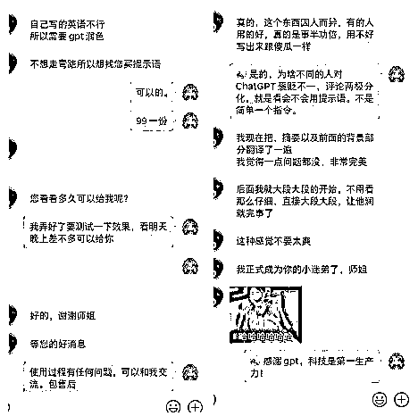
后来更新到结构化提示语，润色效果就更加精细化了。这时候我就想能不能针对论文写作、润色、选刊、投稿、回复审稿意见等的整个流程设计一套提示语，用ChatGPT来辅助完成呢？这样一方面，课程的需求扩大了，另一方面也能把价格提上来。
接着，我就在朋友圈发了课程预告，一周上线一节课，1个半个月全部上线。有几个人点赞，2个铁杆粉丝说要买，直接打钱给我。这给了我一些信心，接下来就是开始做课了。每天早上上班前、下班后，就是铺在写逐字稿、做ppt、录制课程上。
写逐字稿的时候，人又开始焦虑了。害怕写不好，害怕负面评价。第一节课也因为害怕，迟迟不敢上架，但是，已经有人付钱了，只好硬着头皮，录了七八上十遍，终于赶在deadline前最后一天的凌晨上架了。有了第一节课的经验，后面的几节课就顺利多了。
课程预售期间是599，全部上架后卖799，后来恢复原价999元。没想到卖的最好的反而是999元。因为有了学员好评和案例，再加上公众号持续分享论文写作知识。说到底，用户视为你的价值而非价格付费。
在和引流过来的人群交谈的过程中，不断挖掘需求。
目前又有了论文1v1陪跑（收费1万+），1V1润色（收费2000），论文预初审和回复审稿意见把关（收费499）。
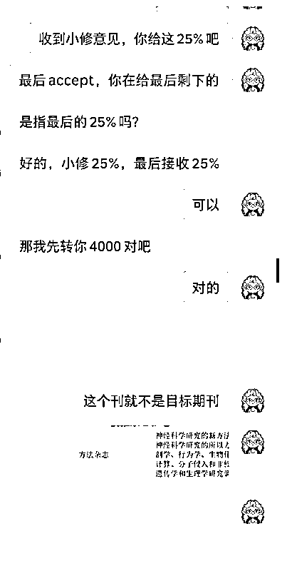
此外，开头介绍的第二门课程《AI辅助毕业论文撰写》也是在学员的建议下开设的，
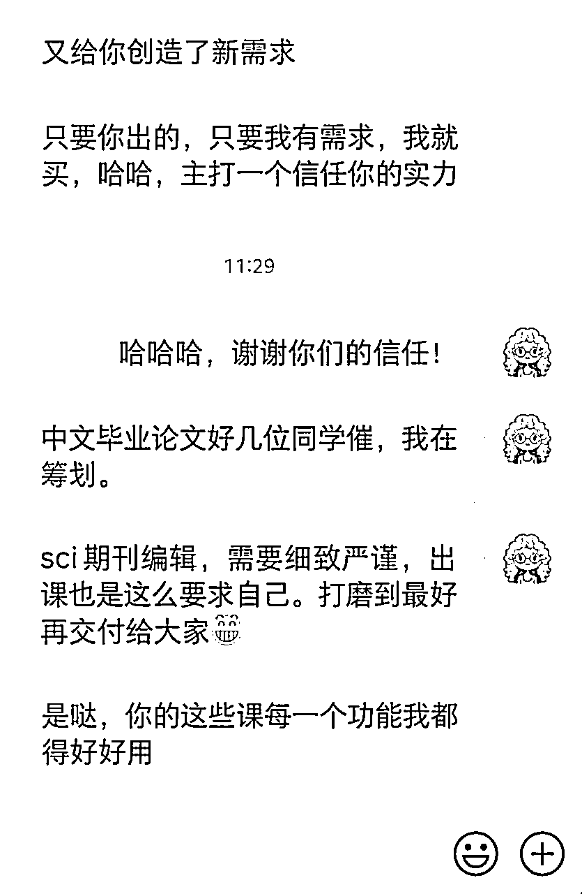
公众号也从年初的400个粉丝增长到3700+，因为持续分享AI应用，最近还报价四位数，接了天工AI的广告：
对于一个工作3-5年的职场人士，该如何做一门用ChatGPT提效的课程呢？这里我把我的方法论和制作过程分享出来，相信不论你在哪个行业，都可以按照这个流程，利用ChatGPT，做一门细分行业的高客单AI提效课程。
“对于完成一件事，需要哪些细节步骤，每一步做到怎样才算是高质量，我们非常清楚”，这也是职场老人的优势。比如对我来说，从一篇论文的写作-投稿-审稿-修改-发表，中间需要哪些步骤，要提交哪些材料，每种材料是什么要求，怎样算质量高的，我就比一般人更清楚。如果我针对每一个步骤，都能生成好的提示词，帮助小白们达成80分以上的质量水准，这样一个全流程的AI辅助方案，一方面提升了课程的吸引力，另一方面提高了课程的附加值。单个提示词我买99，针对从写作-发表的全套解决方案我就可以卖999。
那对于HR来说，如果要做一门针对求职者的AI辅导课程，就可以针对求职的一系列流程：
自我现状梳理-市场调研-简历准备-求职信撰写-面试准备-面试后跟进等；
将AI嵌入各个环节，辅助高效高质量完成。
这个是用AI生成优质内容的方法论。比如你让AI直接输出一篇3000字的论文，大概率是不能用的。我们把这个输出过程拆解成：搭框架-确认框架-根据框架逐步输出各部分内容，这样，得到的一篇论文大概率就是紧扣主题、重点突出的。
比如我在制作论文前言部分的撰写课程时，也是把前言部分的输出分为“搭框架-填充内容-补充论据”这样三步完成。相当于我们在每一个环节，设置一个checkpoint，人对于AI的输出结果及时纠偏确认，再完成下一步，免得它一口气输出的效果差到完全不知道从哪改起。
首先，不是太复杂的任务，可以用台风老师 @台风 的BRTR原则。
稍复杂的任务，我还是推荐大家用结构化提示词。一方面，对于提示词制作者来说，分块往里填内容，不会遗漏；另一方面，能够让AI更好的执行，给出的结果更加精细化和准确。
结构化提示词由LangGPT李继刚老师原创，具体的结构之前有生财圈友发过，这里我再贴一遍：
# Role:
# Profile:
author:
version:
language:
description:
##Goals:
##Constrains:
##Rules:
##Skills:
##Example:
(可选）
##Workflows:
1.
2.
...
##Initialization:
按照标签的含义往里填内容，规定GPT的输出规则和边界，根据任务不同，不是每一个标签都是必须的。这里比较关键的几个标签#Rules #Skills #Constrains #Workflows 决定了你的提示词在复杂任务中的表现。可以和AI交互完成。比如给它几篇例文，让它总结风格，或者把任务告诉它，让它按照结构化提示词输出，然后再找不同的案例测试效果，根据它的输出来优化提示词。
一份优质提示词的生成过程如下：
我的SCI论文润色提示语就是这么来的。我知道好的论文是什么样的，差的论文差在哪里，是语法、逻辑、用词、时态？这样，我就可以准确评估ChatGPT的输出质量，哪个方面还需要改进，再去微调提示词，再来测试，最终生成的提示词能达到一个比较好的输出效果。
那比如你是一位HR，想要调试一个制作简历的AI提示词，那你对于什么样的简历是面中率更好的优秀简历，你比其他人更了解，那你就可以在和AI工具交互的过程中，通过多轮测试调整，制作的简历制作提示词肯定比其他人的质量更好。
鱼丸之前也发过一份“AI提示词合集”，包含AI提示词的调教方法和各类模版。很全面，大家可以去学习。
对于AI工具的选择，也不仅限于ChatGPT。现在国内国外的AI工具都很多了，比如长文本输入输出用kimi，内容总结提炼用Claude，中文内容的长文本润色Cohere也很不错，英文内容找参考文献用Perplexity，中文参考文献搜索用秘塔AI等等。
咱们新人第一次做课，不需要买高大上的工具，能免费就不花钱，先干起来再说。我的课程制作过程是这样的：
因为第一次录制课程，害怕自己紧张说话结巴，会先在飞书写逐字稿，然后再做成PPT录制。录制我用的是Bandicam，一个非常轻量简洁的录屏工具，收音用的罗技戴头式耳麦H390（95块钱），也是生财圈友介绍的，忘了是哪一位，效果很不错。
做PPT现在也有很多AI工具辅助，生财也有很多圈友介绍过，我用的mindshow。PPT不用很花哨，简洁清晰即可，因为课程的主要目的是展示如何用提示词达到想要的效果。录课的时候，分两个屏幕，一个屏幕讲解PPT并录制，一个屏幕展示飞书逐字稿，以免紧张忘词。
课程售卖，我是放在小鹅通，很方便。
对于没有互联网项目经验的小白来说，这些都是全新的体验。也是摸着石头过河，失败、谈崩、不了了之的单子一大把，目前也还在提高中。
目前我的引流方式是：知乎/小红书--公众号--个人微信，这样一个漏斗体系。前面知乎那篇引流贴火了以后，我就一直在知乎更新，引流到微信。后来发现有人搬运我的知乎文章发在微信公众号，然后又开始写公众号。
大家要找准自己擅长的表现方式，是视频还是文字。视频可以去小红书、视频号持续输出，吸引用户，擅长文字可以像我一样，在知乎、公众号码字，吸引目标用户。如果关注了你的公众号，还愿意扫码加你微信的，一般都比较认可你了，信任感的基础也有了。
我的公众号每周更新2-3篇，从今年刚开始的400个粉丝，现在也有3700+了。公号内容就是分享论文写作投稿相关的知识，文末附上卖课海报。
公号卖课效果还不错，很多人还没加上微信，就直接在公众号扫码购课了。
此外，给大家介绍一个一鱼多吃的小tips。公众号的文章，除了同步到知乎，还可以同步到CSDN社区。CSDN是一个程序员、码农的交流社区，为什么要发到这里呢？答案是它在搜索引擎的排名很靠前，可以多一个引流到公众号的渠道。这也是之前我在搜索答案的时候发现的。
比如你在Bing搜下面这个问题，排名第一二的都是我的回答，第二名就是源自CSDN。
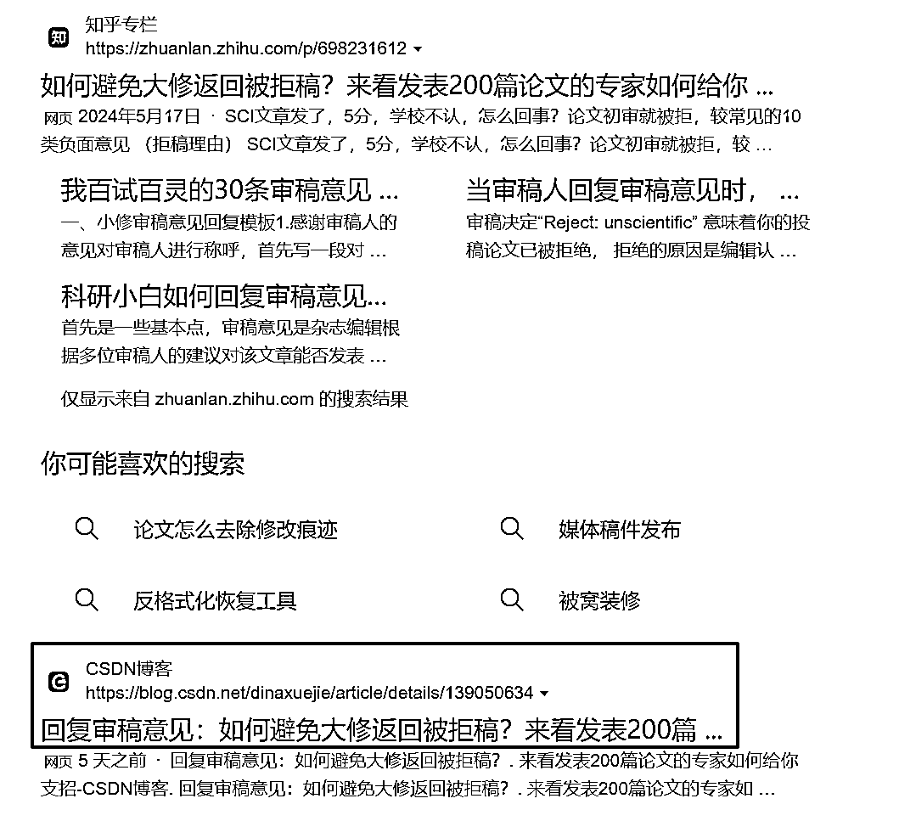
我同步了28篇文章，就有2.5w访问量，还吸引了人民邮电出版社的编辑找我约稿出书。
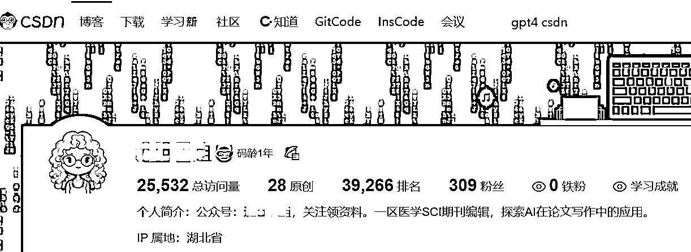
加到公众号以后，每篇文章也会带个微，引导需要购课咨询或近距离围观的人加V进一步转化。加人后，我的话术也是参考了很多大佬，包括宋老师 @宋老师 的详细做课教程，学到很多。破冰包括“个人介绍+赠送资料+问话引导对方开口”，目前看来，效果还行。
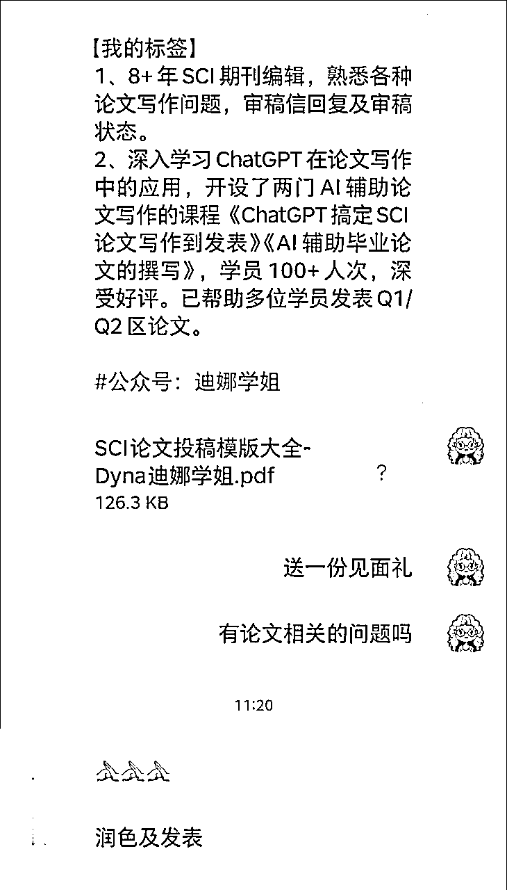
这块就是持续在朋友圈发圈，包括专业知识、学习群讨论、和学员的对话截图等，发文频次还有待提升，一天5条对于i人真的有点难。
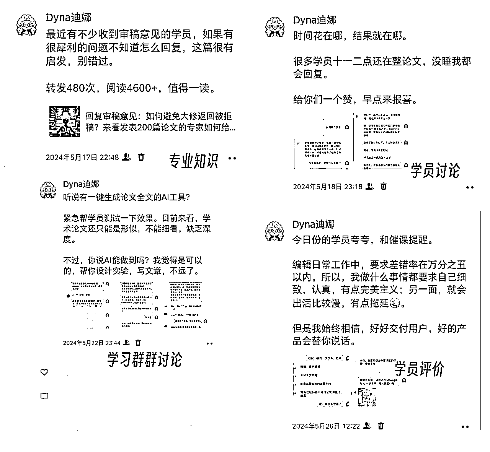
一对一的转化，这块也是跟着梁靠谱老师学到很多，包括她的销售进度条、销售框架我都写在小纸条上，对着谈。之前跟别人交流是被动模式，别人问啥我答啥。现在也学着主动的询问和挖掘需求，把问题抛给对方，然后给对方规划成交后的愿景。
慢慢的，也有在朋友圈待了大半年的人，私聊过来买课。
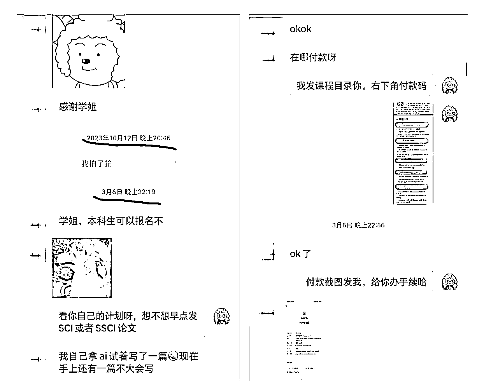
一开始，虽然自己意识到了GPT在辅助论文写作中的巨大价值，但是不敢相信自己能卖出去，慢慢的，随着学员你的肯定和好评，觉得2024年能卖100份就不错了，没想到就这样一步步走，不到5个月就完成了年度目标。这也是因为ChatGPT是风口，而我入局的早的原因。包括3月份，地质大学教授发表在1区期刊上的文章前言第一行字就露出了ChatGPT的马脚“Certainly, here is a possible introduction for your topic（当然，这是关于你的主题的前言部分）” 我第一时间写了公众号文章，并附上了课程介绍。这篇文章带来了几十个课程转化。
这就是时代的推背感吧，自带热度。
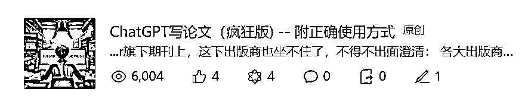
一是，因为课程的稀缺性，你可以卖高价。现在跟AI相关的号很多，“每日AI进展” “AI工具介绍”等等，竞争也很激烈。但是，持续介绍和分享AI在你的细分领域的应用，你就是独一份，别人模仿不来，你就可以做的轻松也能卖上高价。
比如我的《ChatGPT辅助SCI论文写作》课程，别人卖AI课程19元、199元，我可以定价999元。就是因为单拿润色这一项，市场价就是至少2-3000元，所以学员们觉得超值。近期我打算更新补充一下，把价格提到1299元。
二是，在主业之外，你有了更多选择。就我就职的期刊编辑一职，专业面很窄，换一家单位，薪资待遇不升反降；在职场上，中年人也是最好拿捏的，领导知道你不敢轻易离职，一度面临的局面也是卡的死死的，焦虑到整夜失眠。但是，你在副业中，看到了人生另一种发展的可能性。原来，我的专业知识是值钱的，能力是被人认可的。学员们花钱买了你的课，客客气气的称你为“老师、学姐”，向你请教问题。这种被人尊重和认可的感觉，是金钱换不来的。
前面我也写过我的卖课夭折事件。起因就是看到别人的论文写作课299元，能卖几万份。于是，就开始整理大纲，写逐字稿。逐字稿写完，心理上的磨损就已经比较严重了，因为一直没有正反馈，不知道自己究竟干的怎么样。等到录制PPT的环节，信心崩塌了，坚持不下去了。
所以，提前卖课再做课很重要。能预售出去，一方面，说明这个需求是有的，自己是被认可的；另一方面，收了钱，你的兑现承诺，避免了拖延症和完美主义的弊端。
刚开始，加到微信的人问一些投稿审稿写作的问题，有时间我都会回复一下。一个学生说导师让他写一段英文材料，不知道怎么润色。当时是假期，我也没什么事，就帮他改了一下提示词。结果，回复完问题就把我删了。气得我还发了个朋友圈。也让我意识到，免费的建议不会被人珍惜。
我需要把时间精力用在付费学员和课程群，帮助他们出结果，此外，AI进展日新月异，我也需要持续提升自我，给别人提供更多价值。这样才是一个良性循环。
有一个铁杆粉丝，从我还没做课起，就给我付费请我帮忙润色论文，我出的每一个课，他都第一时间掏钱买，经常请教问题还发红包。做课过程，他也给我提供了很多需求建议。他的第一篇论文，图片是我帮他改的；投稿、回复审稿意见、线上校对过程中，我也第一时间给他提供建议和帮助，最终他的第一篇成功论文发表了。
做自媒体，需求响应是一个一对多的局面。咱们一定要把注意力和时间用在对的人身上。不要因为对对方有成交的期盼，就无限付出。只对付费学员负责。
卖课程需要有持续的精准流量进入。对于我来说，就是通过公域的公众号、知乎，来曝光。适合我的方式就是每天早起，花1-2个小时写公众号文章，发布。然后再做其他事情。早起没人打扰的时间，是我专注做最重要的事情的时间。但是，有一段时间，早起掏出手机，就开始通过好友申请，然后跟这些人有一搭没一搭的聊。结果就是，几个小时过去了，文章没写，课程也没卖出去一个。时间白白浪费了。
其实，晚一点通过好友，回复消息也没关系。你需要在精力最好最专注的时间，把最重要的事情做了。其他的事情，可以用碎片化时间完成。
第一次做互联网项目，很多思维没打开。我觉得，这个项目，至少可以有100w营收。因为AI在内容生成方面确实很强大，而对于需要发表文章来毕业、找工作、评职称的非英语母语人士来说，写作是刚需加痛点。看看那些语言润色公司，作为一个中间商，赚得盆满钵满就知道了。
总结一下，还可以有以下改进的地方：
一是，找人合作。特别是有高校学生、硕博生、科研人员群体流量的人合作卖课分成。
二是，可以尝试短视频或直播卖课。目前，主要是公众号、知乎类的文字形式，还是没有视频效率高，特别是直播，想过，但是还是没能克服出镜的恐惧，迟迟没迈出这一步。
三是，可以尝试把课程放在其他平台。比如人民邮电出版社的编辑，建议我把课程放在他们的平台来卖，我打算等课程更新升级之后尝试一下。还有其他的平台，小红书、B站，也是目标用户聚集的地方，都值得去做。
最后，我要感谢生财。加入生财这么久，才做出一点小成绩，我算是行动缓慢的，哈哈。但是，前期的各种项目经历，并不是完全没有价值。还有看了这么多生财帖子，培养了我的网感，开拓了视野。这个和体制内的职场谋生是完全不同的规则和世界。让我在还没赚到钱的时候就坚信，赚钱，不是只有职场那个有限游戏一条路。很大程度上减轻了我的焦虑。
此外，还要感谢靠谱@梁靠谱 和芷蓝 @芷蓝。这个课程从0到1，能够取得这一点成绩，两位是我的领路人。从思路、方法、资源和信心上，给了我全方位支持。
感谢你看到这里，全文完。如果大家还有关于AI做课方面的疑问，也欢迎在评论区留言问我。